Read more about the process on the Bear Abouts site.
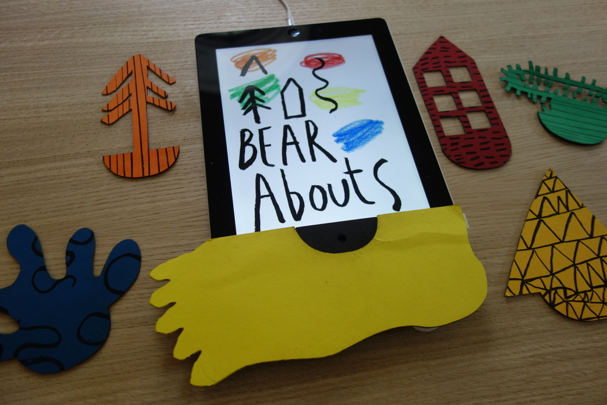
Bear Abouts is a crossover in the fields of app creation, book publishing, and children’s education. Intended to recapture the magic of interacting with our hands that the proliferation of smartphones threatens to deaden, Bear Abouts is a digital/paper hybrid book that gives kids the power to create and influence stories.
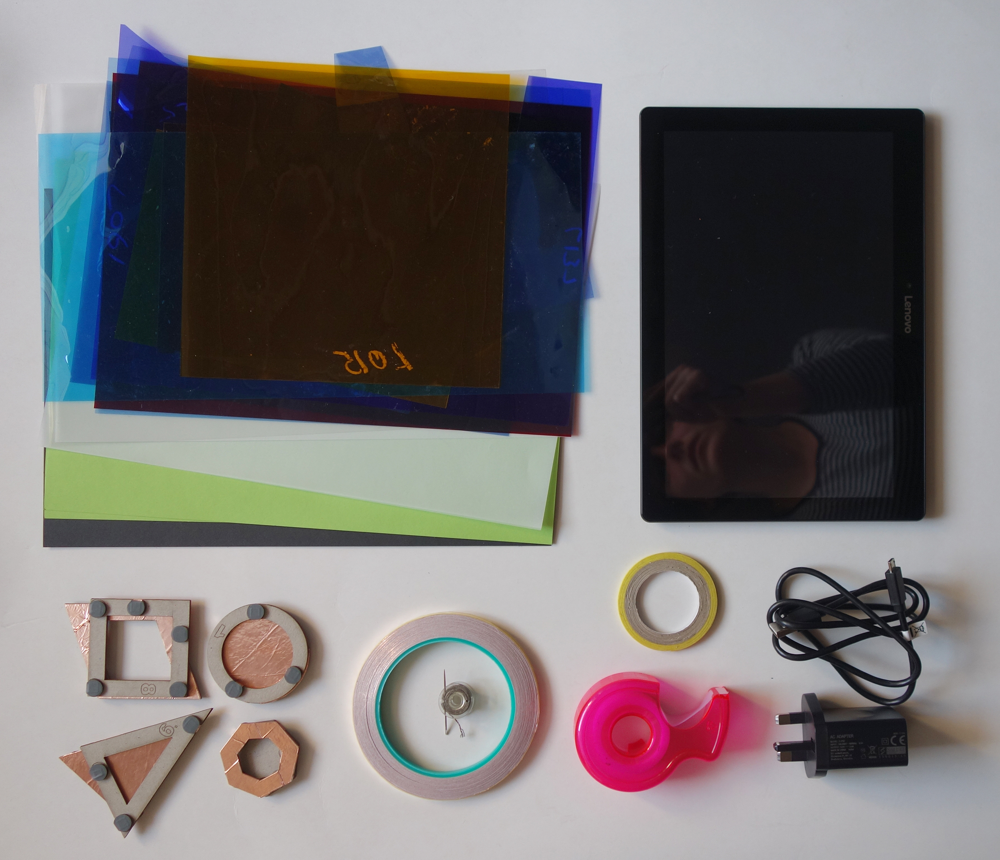
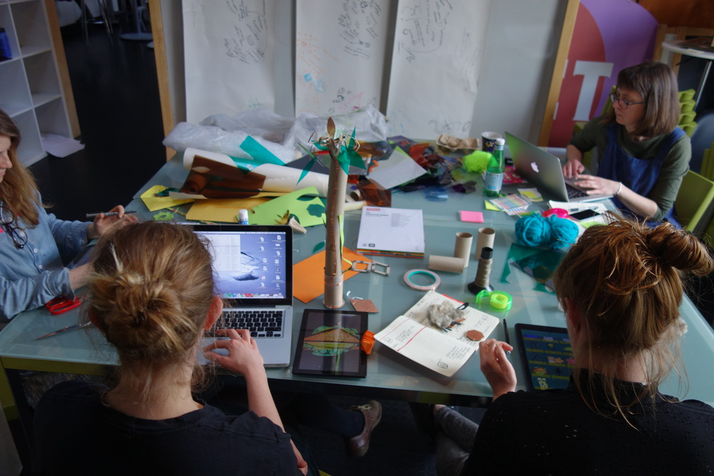
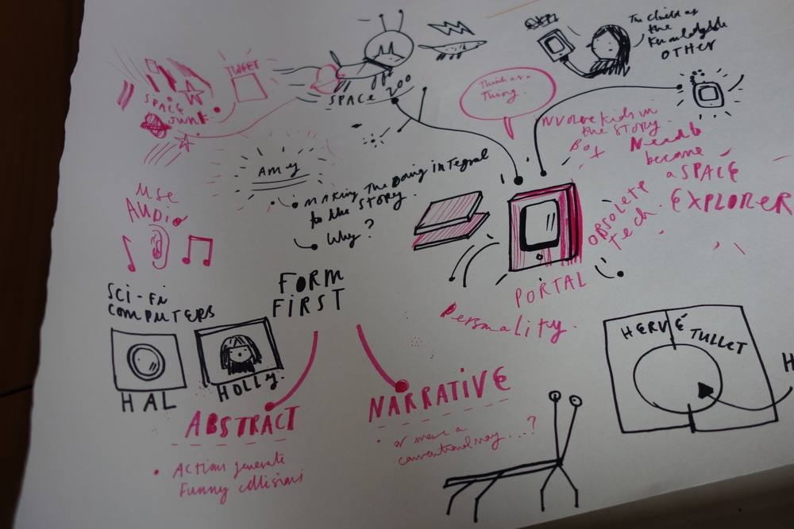
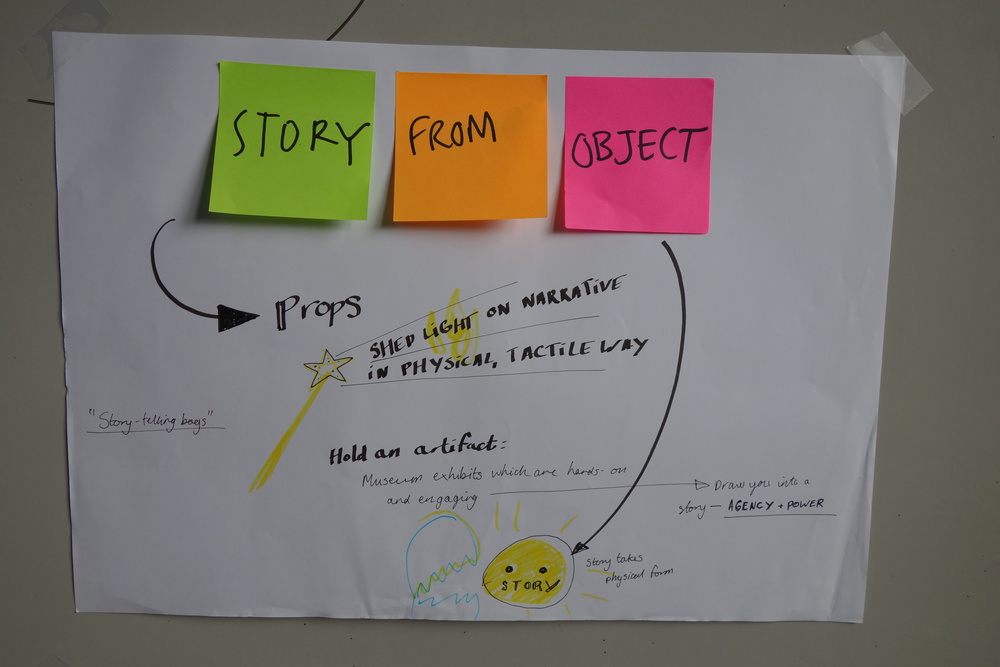
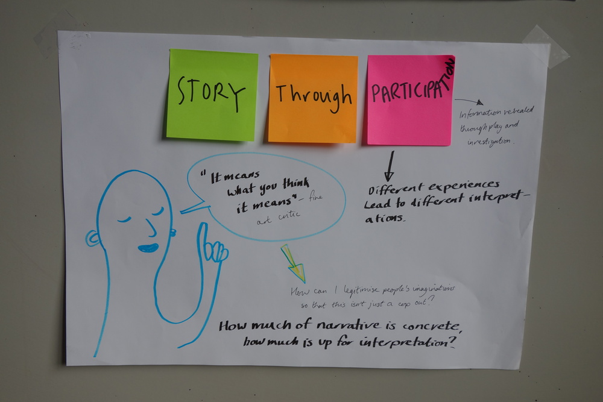
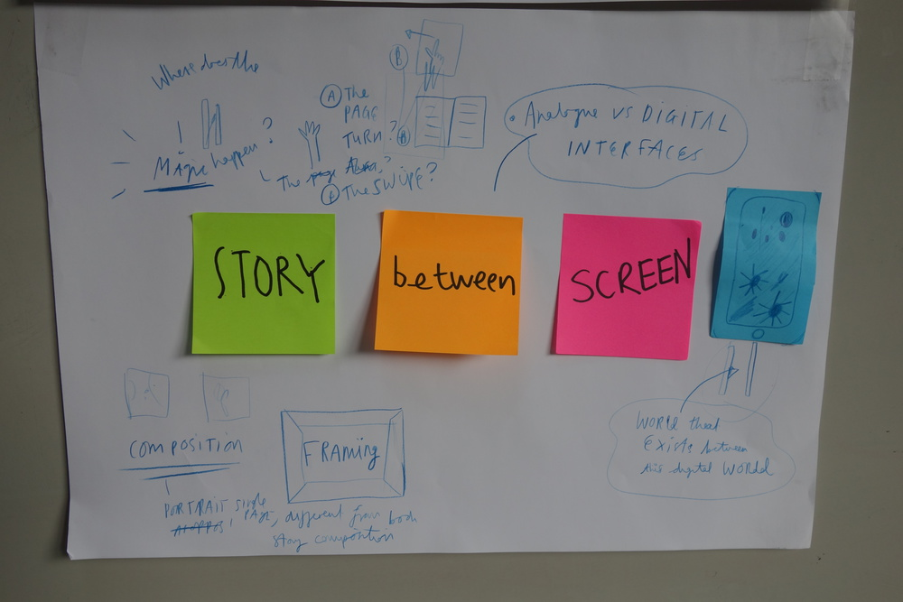
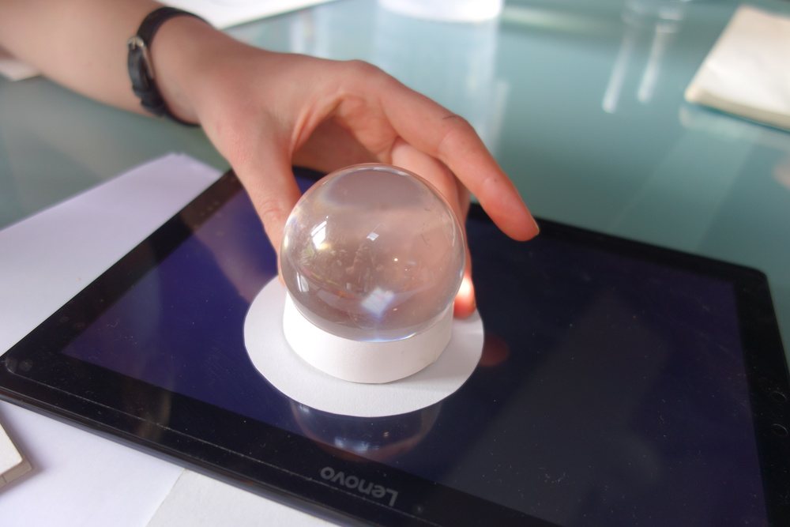
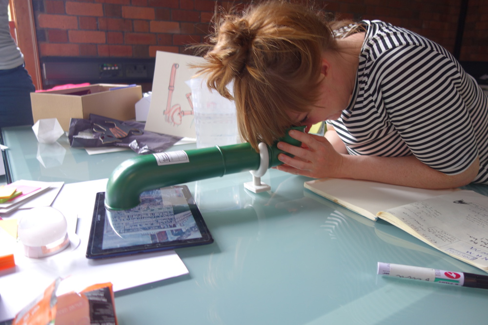
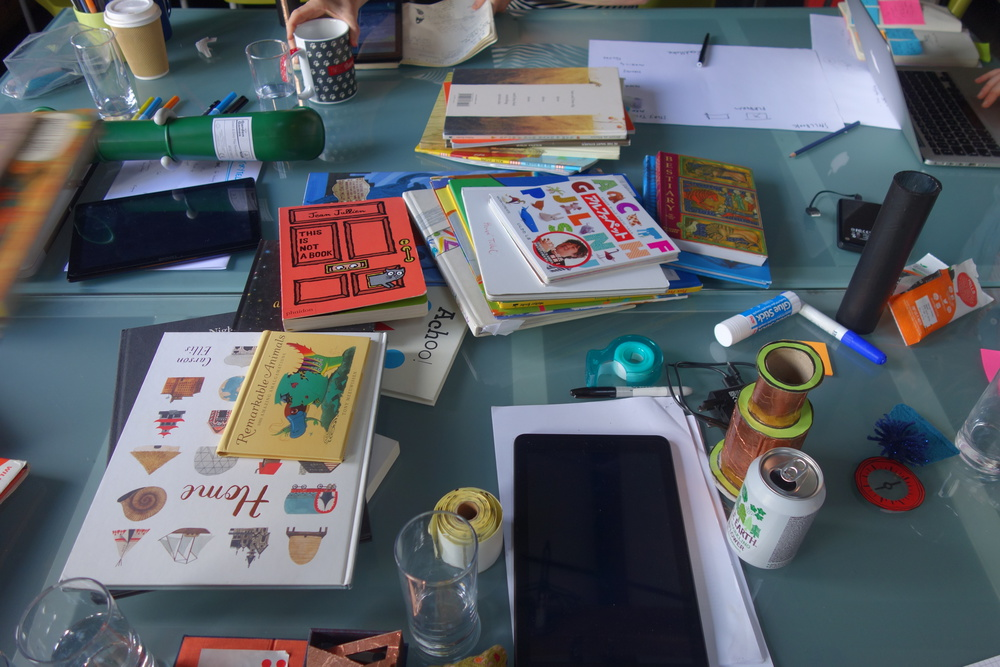
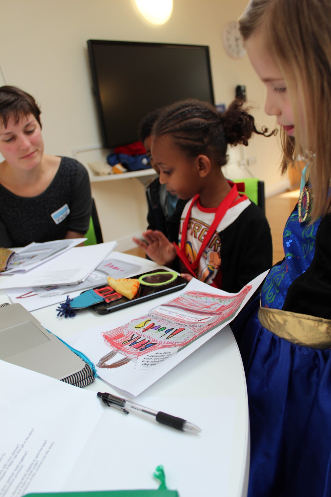
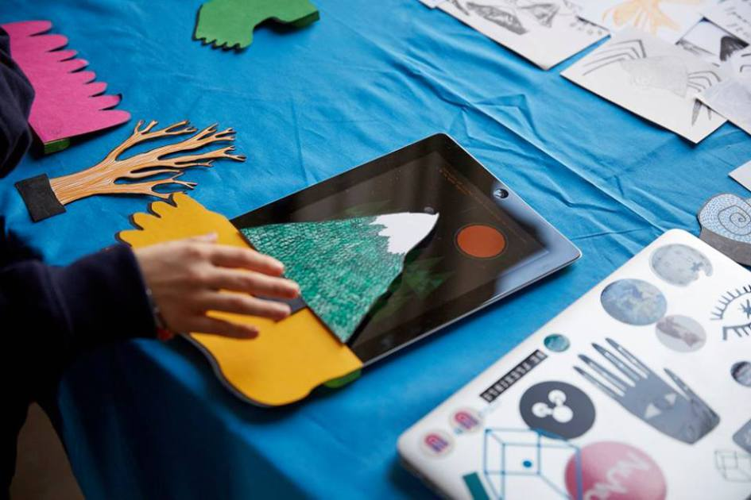
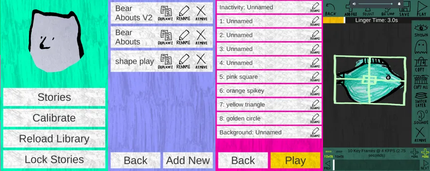
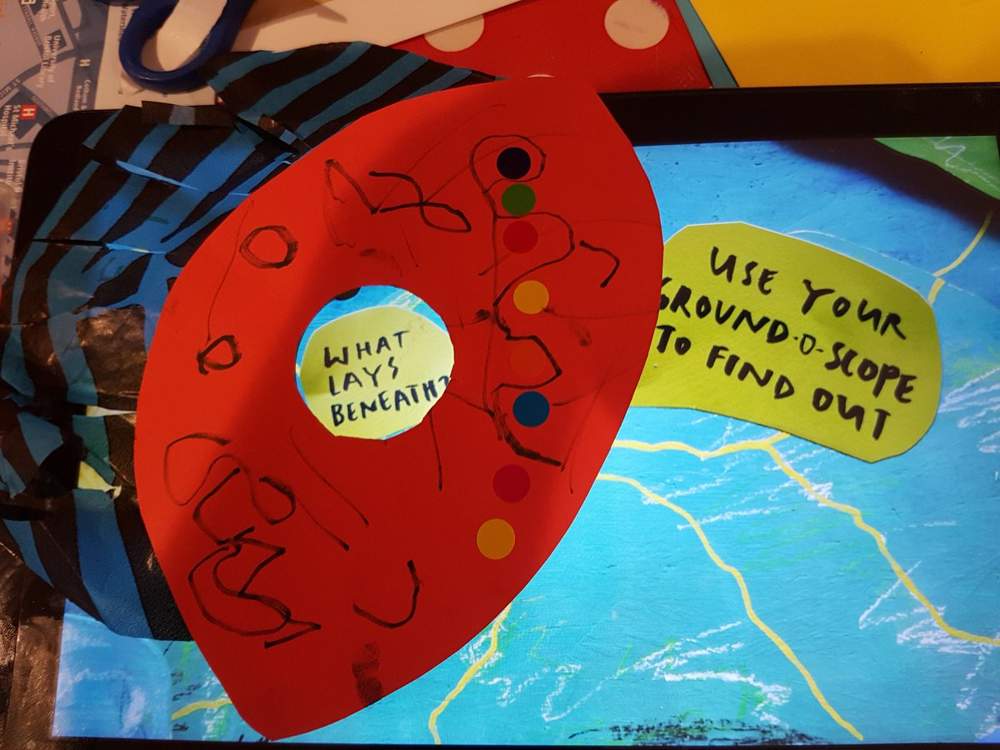
Bear Abouts is a research project into storytelling and tangible media. It was originally funded through research and development funds from Arts Council England and Innovate UK. The project is led by Becca Rose Glowacki, and been developed by a number of creative practitioners including: Sarah Warden, Mark Wonnacott, Amy Rose, Emma Powell, Liv Bargman, Blythe Pepino, Nick Willshire, Phill Tew, Ben Gwalchmai.
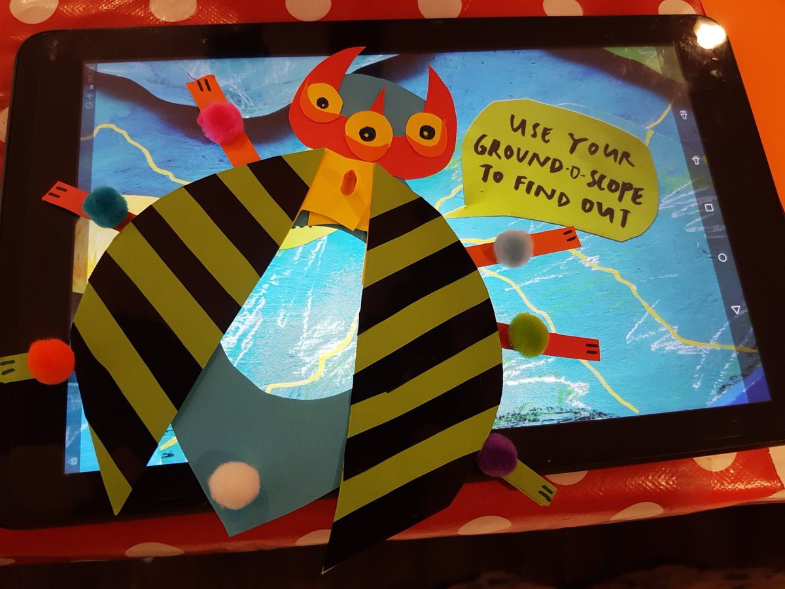
The second creative lab was an opportunity to get together in person and discuss ideas at the mid-point in the residency. The session was geared around reflection and sharing. We started the day with an activity to think more deeply about the interaction that the artists are making through how they preposition their stories. We invited artists to select two of the elements they are working with (i.e. objects, stories, sound, touch, participation) and use different prepositions (such as from, through, towards, over) to connect them, drawing and writing in response. We then spent some time reflected on this as a group.

As part of our storytelling residency we are hosting two creative labs. These are facilitated creative sessions where the artists and technologists can discuss and explore ideas. We realized that there were many things to learn about this technology such as the user-interface, the modes of interaction. We also wanted to create a space where we could learn from each other and develop ideas through sharing. The fist lab marked the start of the residency. We did a bit of “getting to know you”, shared ideas through a design “share-ette” (see images below), and learned to used the platform by making.

Bear Abouts is a research project into storytelling and tangible media. It was originally funded through research and development funds from Arts Council England and Innovate UK. The project is led by Becca Rose Glowacki, and been developed by a number of creative practitioners including: Sarah Warden, Mark Wonnacott, Amy Rose, Emma Powell, Liv Bargman, Blythe Pepino, Nick Willshire, Phill Tew, Ben Gwalchmai.